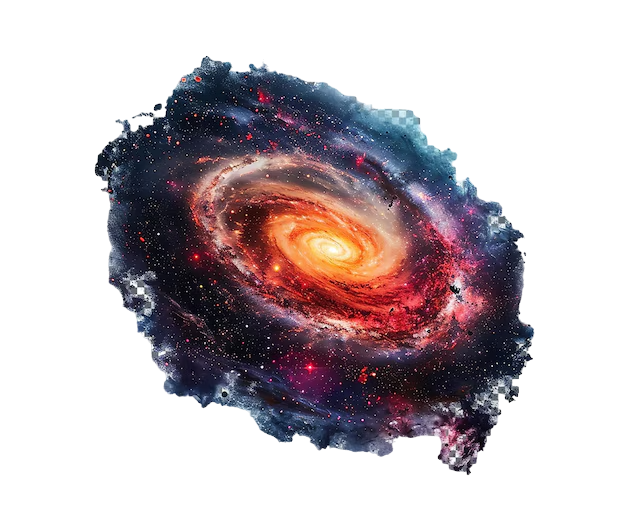

The Milky Way Galaxy is a vast, barred spiral galaxy that includes our solar system. It spans about 100,000 light-years in diameter and contains roughly 100 to 400 billion stars, including our Sun, which is located around 27,000 light-years from the center. The galaxy's structure consists of a central bulge, spiral arms, and a surrounding halo. At its center lies a supermassive black hole known as Sagittarius A*, with a mass millions of times that of the Sun. The Milky Way is about 13.6 billion years old, nearly as old as the universe itself, and is moving towards a collision with the Andromeda Galaxy in around 4.5 billion years. It is part of the Local Group, a collection of galaxies that includes Andromeda and the Triangulum Galaxy.

SOME INTRESTING FACTS ABOUT MILKY WAY GALAXY
It’s a Spiral Galaxy:The Milky Way has a spiral structure, with multiple arms swirling
around a central bulge. These arms contain stars, gas, and dust, forming the galaxy's
distinctive shape.Massive Black Hole at the Center:The Milky Way's center houses a supermassive black hole
Sagittarius A*, which has a mass approximately 4 million times that of the Sun.Our Position:The Solar System is located in the Orion Arm, a minor spiral arm of the Milky
Way, about 27,000 light-years from the galactic center.Colliding with Andromeda:The Milky Way is on a collision course with the Andromeda Galaxy
They will collide and merge in about 4.5 billion years, forming a new galaxy, often referred
to as "Milkomeda."Invisible Matter:Most of the mass of the Milky Way, and most galaxies, is in the form of dark
matter, which cannot be seen but is inferred from its gravitational effects on visible matter.
Milky Way Galaxy Hidden Wonders and Bizarre Phenomena
Great Attractor:The Milky Way is moving towards a mysterious region called the Great Attractor, whose
nature is still unknown.Dark Matter:Around 85% of the galaxy's mass is dark matter, which remains undetectable.Fermi Bubbles:Enormous gamma-ray bubbles above and below the galaxy’s center with an unclear origin.Missing Satellites:Some of the galaxy’s smaller satellites are missing or hidden, possibly destroyed
by dark matter.Cosmic Cannibalism:The Milky Way has "eaten" smaller galaxies and continues to merge with them.Strange Star Clusters:Some star clusters behave unexpectedly, defying conventional stellar formation
theories.Disappearing Stars:Some stars mysteriously vanish or move from expected positions, possibly due to unseen
objects like rogue planets.